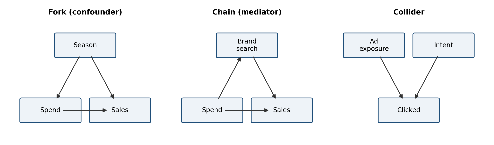
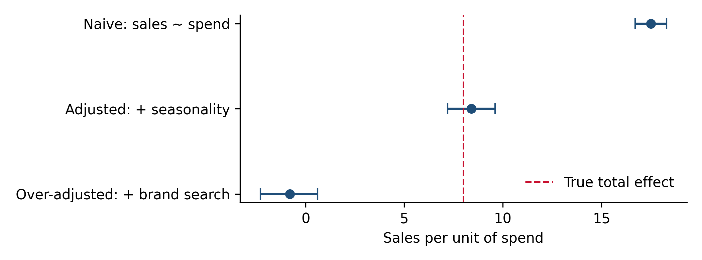

Chapter 3 Causal thinking for marketers
Whether an observed relationship between marketing and outcomes can be read as an effect, what you need to control for (and what you must not control for), and which identification strategy a question needs before anyone opens a dataset.
3.1 Every marketing question is a counterfactual
“Did the campaign work?” means “how many conversions happened that would not have happened without it?” The second half of that sentence describes a world that did not occur. Causal inference is the discipline of estimating outcomes in worlds you cannot observe.
The standard notation makes this precise. For a unit \(i\) (a user, a market, a week) let \(Y_i(1)\) be the outcome with the campaign and \(Y_i(0)\) the outcome without it. The effect is \(Y_i(1) - Y_i(0)\). We only ever observe one of the two, which is called the fundamental problem of causal inference. Every method in this book is a different way of constructing a credible stand-in for the missing half:
- Randomized experiments make the stand-in a randomly chosen control group.
- Geo experiments and synthetic control make it a weighted combination of untreated markets.
- Difference-in-differences makes it the treated group’s own past, adjusted by the trend in a comparison group.
- Regression and MMM make it a model prediction with the treatment set to zero.
The methods differ in how much they rely on assumptions you cannot check. That is the axis on which to compare them, more than precision or convenience.
3.2 Why marketing data is especially confounded
Marketing data is close to a worst case for naive analysis, because spend is rarely set independently of the outcome it is supposed to drive.
- Budgets follow demand. Planners spend more in peak season because that is when customers buy. Spend and sales rise together even if the ads do nothing.
- Targeting follows intent. Retargeting, branded search and CRM reach people who were already likely to convert (Chapter 1).
- Some channels respond to demand mechanically. Search spend rises when more people search, which happens when demand is high for any reason.
- Changes cluster. Campaigns launch with promotions, product releases and price changes. Before-and-after comparisons cannot separate them.
- Activity bias. People who are online a lot both see more ads and do more of everything online, including converting.
Each of these creates a correlation between spend and outcomes that is not caused by the spend. The size of that spurious correlation is often larger than the true effect.
3.3 Drawing the problem: causal graphs
A causal graph (a DAG, for directed acyclic graph) is a diagram of what causes what. Drawing one before analysis forces assumptions into the open, and it tells you exactly which variables to adjust for. Three patterns cover most situations.

Figure 3.1: The three basic structures. Adjust for confounders; do not adjust for mediators when you want the total effect; never adjust for colliders.
Forks. Seasonality drives both spend and sales. It is a confounder: you must adjust for it, or the seasonal pattern will be credited to spend.
Chains. TV spend drives branded search, which drives sales. Branded search is a mediator: part of the TV effect flows through it. If you put branded search into the model as a control, you block that path and the model credits TV with only its direct effect. This is one of the most common errors in marketing mix models, and it systematically under-credits upper-funnel media.
Colliders. Ad exposure and existing intent both make a user more likely to click. If you restrict your analysis to clickers, you create a spurious negative correlation between exposure and intent among the people you study. Any analysis that filters on a post-treatment outcome (“users who engaged”, “visitors who reached the pricing page”) risks collider bias.
The rule that falls out is simple to state: adjust for common causes of treatment and outcome, do not adjust for anything the treatment itself affects.
3.4 Worked example: three regressions, three answers
We simulate three years of weekly data in which the truth is known.
- Underlying demand has a strong annual cycle.
- Planners set spend from a seasonal forecast, so spend is higher in peak season.
- Spend raises branded search, which raises sales, and spend also has a direct effect on sales.
- The true total effect of one extra unit of spend is 8 sales: 2 directly plus 1.5 × 4 through branded search.
import numpy as np
import pandas as pd
import statsmodels.formula.api as smf
rng = np.random.default_rng(3)
t = np.arange(156)
season = 300 * np.sin(2 * np.pi * t / 52) # forecastable seasonal demand
demand = 1000 + season + rng.normal(0, 40, t.size)
spend = 50 + 0.08 * season + rng.normal(0, 8, t.size) # planners spend into the peak
brand_search = 200 + 4 * spend + 0.3 * demand + rng.normal(0, 15, t.size)
sales = 0.5 * demand + 1.5 * brand_search + 2 * spend + rng.normal(0, 30, t.size)
df = pd.DataFrame({"sales": sales, "spend": spend, "brand_search": brand_search,
"s1": np.sin(2*np.pi*t/52), "c1": np.cos(2*np.pi*t/52)})
models = {
"Naive: sales ~ spend": "sales ~ spend",
"Adjusted: + seasonality": "sales ~ spend + s1 + c1",
"Over-adjusted: + brand search": "sales ~ spend + s1 + c1 + brand_search",
}
rows = []
for name, f in models.items():
fit = smf.ols(f, df).fit()
lo, hi = fit.conf_int().loc["spend"]
rows.append({"Model": name, "Estimate": fit.params["spend"],
"95% CI low": lo, "95% CI high": hi})
res = pd.DataFrame(rows).set_index("Model").round(1)
res["True effect"] = 8.0
print(res.to_string())## Estimate 95% CI low 95% CI high True effect
## Model
## Naive: sales ~ spend 17.5 16.7 18.3 8.0
## Adjusted: + seasonality 8.4 7.2 9.6 8.0
## Over-adjusted: + brand search -0.8 -2.3 0.6 8.0import matplotlib.pyplot as plt
fig, ax = plt.subplots(figsize=(7, 2.6))
y = np.arange(len(res))[::-1]
err = [res["Estimate"] - res["95% CI low"], res["95% CI high"] - res["Estimate"]]
ax.errorbar(res["Estimate"], y, xerr=err, fmt="o", color="#1F4E79", capsize=4)
ax.axvline(8, color="#C8102E", ls="--", lw=1.2, label="True total effect")
ax.set_yticks(y, res.index); ax.set_xlabel("Sales per unit of spend")
ax.legend(loc="lower right")
plt.tight_layout()
plt.show()
Figure 3.2: Estimated effect of spend under three specifications. Only the model that adjusts for the confounder and leaves the mediator alone recovers the truth.
The naive regression roughly doubles the true effect, because spend rides on the seasonal peak and gets credit for it. Adding seasonal terms removes the confounding and lands near the truth with an interval that contains it.
Adding branded search does something worse than expected. You might guess it would cut the estimate to the direct effect of 2, since it blocks the path through search. Instead the estimate falls to around zero. The reason is that branded search is not only a mediator: it is also driven by demand fluctuations the model cannot see. That makes it a collider between spend and unmeasured demand, and conditioning on it opens a spurious path that pushes the spend coefficient down further. In real data, where branded search responds to everything from news coverage to competitor activity, this is the normal situation, not a contrived one.
Notice that all three regressions fit the data well and all three produce tight confidence intervals. Statistical precision tells you nothing about whether the specification is right. Only the causal structure, which comes from domain knowledge rather than from the data, tells you which estimate to believe.
The example is also generous to the analyst in one respect: planners reacted only to the forecastable seasonal pattern, which the sine and cosine terms capture completely. If planners also reacted to unexpected demand (a competitor exits, a news story breaks), seasonal controls would not remove that part of the confounding, and the adjusted estimate would still be biased upward. That is the general weakness of adjustment methods: they only remove confounding you have measured.
Including branded search, site visits or any other downstream metric as a control in a model meant to measure the total effect of upper-funnel media. If the variable sits between the media and the outcome, controlling for it removes part of the effect you are trying to measure.
3.5 A ladder of identification strategies
Each strategy for estimating a causal effect rests on an assumption. The higher up the ladder, the weaker and more checkable the assumption.
| Strategy | Key assumption | How checkable | Covered in |
|---|---|---|---|
| Randomized experiment (user-level) | Randomization was done correctly and nothing leaks between groups | High: balance checks, A/A tests | Chapter 5 |
| Geo experiment | Control markets would have followed the treated markets’ path | Medium-high: pre-period fit | Chapter 6 |
| Synthetic control, CausalImpact | Weighted controls track the treated unit, and no other shock hits it in the test window | Medium: pre-period fit, placebo tests | Chapter 7 |
| Difference-in-differences | Parallel trends between treated and comparison groups | Medium: pre-trend checks | Chapter 7 |
| Regression adjustment, MMM | All confounders are measured and the functional form is right | Low: relies on domain knowledge | Chapters 9 to 11 |
| Raw correlation, before-and-after | Nothing else changed | Essentially none | Avoid |
Two practical consequences. First, if a decision is large and the question can be answered with a method higher up the ladder, it usually should be. Second, when you must use a method lower down, say so in the readout and name the confounders you could not rule out.
3.6 Reporting an observational result honestly
An observational analysis is not worthless; it is often the only option. But the reader needs to know what kind of evidence it is. A short template:
- Design. “This is an observational before-and-after comparison with seasonal controls. It is not an experiment.”
- Estimate with uncertainty. The point estimate, its interval, the sample size and the time window.
- Confounders not ruled out. “A price change in week 14 and a competitor’s campaign in weeks 15 to 18 overlap the window and could explain part of the change.”
- Direction of likely bias. “Both would push the estimate up, so the true effect is more likely below the estimate than above it.”
- What would settle it. “A four-week geo holdout in two matched markets would give a direct estimate.”
3.7 Checklist
- Have you written down the counterfactual: what exactly would have happened without the treatment?
- Have you drawn the causal graph, including how the budget was set?
- Which variables are confounders (adjust) and which are mediators or colliders (do not adjust)?
- Does the analysis filter on anything that happens after treatment?
- Where on the identification ladder does the method sit, and is the decision large enough to justify climbing higher?
- Does the readout state the design, the uncertainty and the confounders that remain?
3.8 Further reading
- Causal Inference: The Mixtape (Scott Cunningham) and Causal Inference for the Brave and True (Matheus Facure). The two most practical free introductions; the second is written in Python.
- Causal Inference in R (r-causal.org) and Applied Causal Inference Powered by ML and AI (causalml-book.org). Deeper treatments with code.
- DAGitty, a browser tool for drawing causal graphs and finding adjustment sets.
- DoWhy and EconML (py-why), CausalML (Uber) and CausalPy (PyMC Labs). Python libraries that implement the methods in Part II.
Full links are in Appendix A.